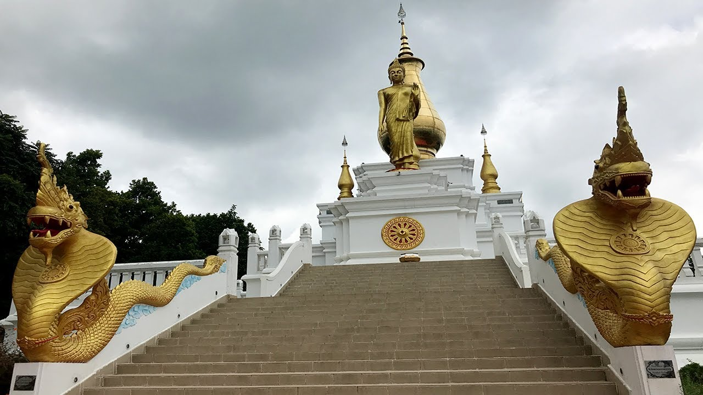

Shalbon Buddhist Temple
Beside Shalbon Biharthere are statues of Buddha standing in sandy stone. It is estimated in the 7th century. There are two copper rule in the 12-13th century. Among the other important items, the huge bell of bronze (370 kg weighing), Shiva's vehicle of black stone, Burma manuscript of Talpata is one of the most important.

Mainamati War Cemetery
Comilla Cantonment is an important military base and the oldest in East Bengal. It was widely used by the British Indian Army during World War II. It was the headquarter of the British 14th Army. There is a war cemetery, Maynamati War Cemetery, in Comilla that was established after the World War II to remember the Allied soldiers who died during World War I and II, mostly from Commonwealth states and the United States.